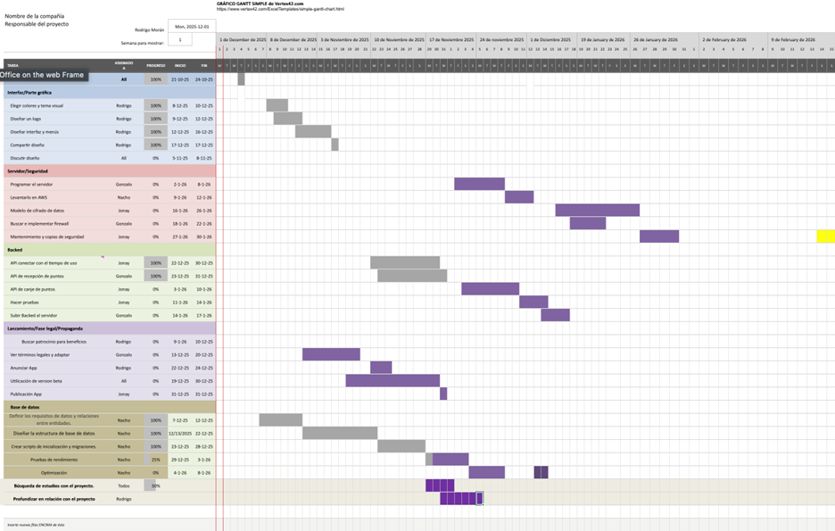

Espacio reservado para la foto del grupo.
1. Recompensas
El texto plantea que el uso excesivo de la tecnología hace que desperdiciemos tiempo en actividades poco beneficiosas, acortando nuestro día a día sin que seamos conscientes. Para combatir este problema, se propone una aplicación que fomente el uso responsable del tiempo mediante actividades en el mundo real. La idea se basa en la competencia sana entre amigos o familiares, compartiendo el tiempo de uso, creando rankings y ofreciendo recompensas y bonificaciones para motivar a los participantes a aprovechar mejor su tiempo.
2. Comunidad
La aplicacion esta pensado de una manera muy estructurada...

3. Herramientas
El reparto de tareas en este proyecto ha sido el siguiente... 